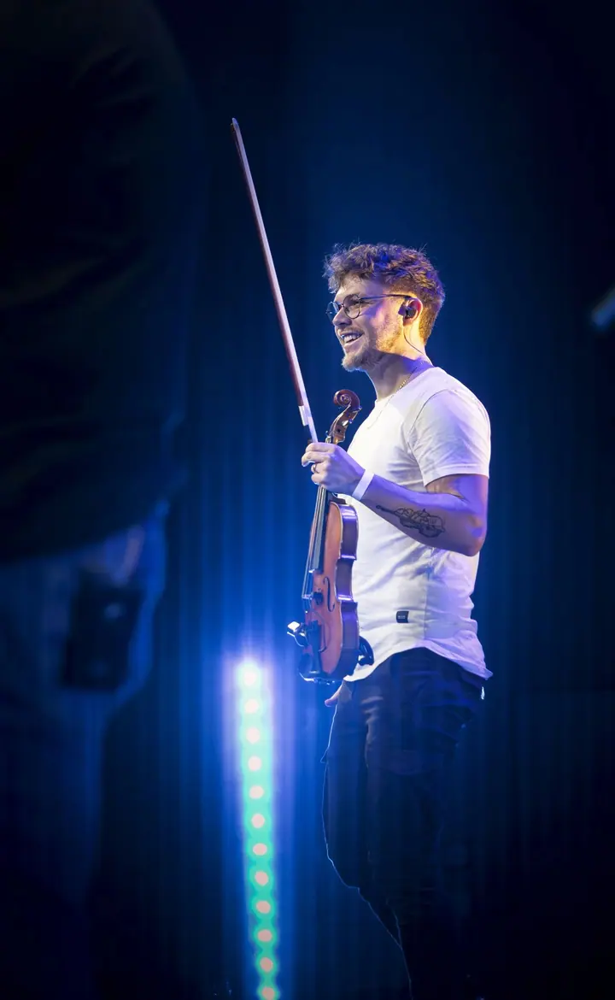
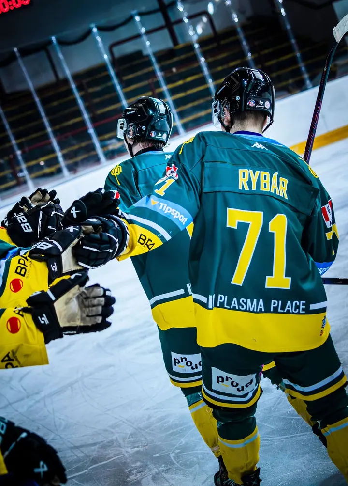
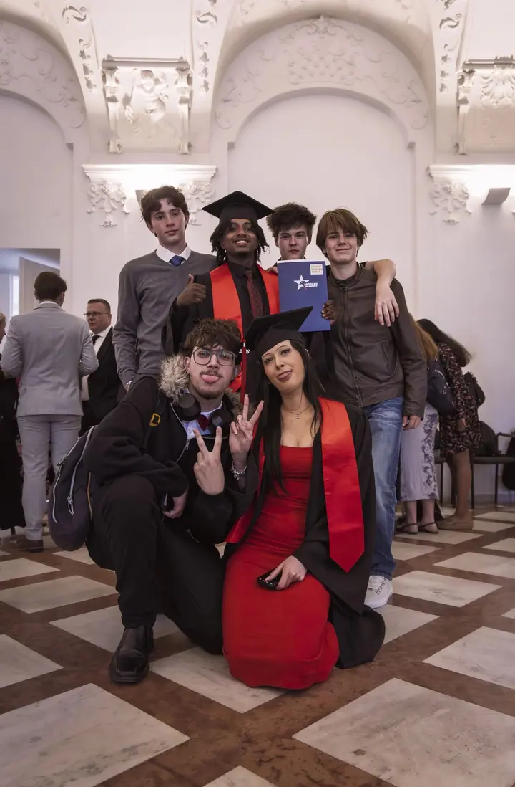

01 / 04
Koncerty a kulturní akce
Fotím koncerty, kulturní a společenské události i maturitní plesy. Kromě důležitých okamžiků zachytím i energii účastníků, diváků a celkovou atmosféru akce.
Zeptat se na termín→


Fotím koncerty, sport a silné emoce
Zeptat se na termín →(01) Ahoj
Jmenuji se Jan Vondrák a fotím sportovní utkání , koncerty a kulturní akce . Mou největší vášní jsou ale zvířata a psi , ve volné přírodě i v zoologických zahradách.
(02) Co fotím
01 / 04
Fotím koncerty, kulturní a společenské události i maturitní plesy. Kromě důležitých okamžiků zachytím i energii účastníků, diváků a celkovou atmosféru akce.
Zeptat se na termín→02 / 04
Spolupracuji se sportovními kluby a fotím hlavně hokejová a fotbalová utkání. Jde mi o rychlé momenty, emoce hráčů a atmosféru na tribunách.
Zeptat se na termín→03 / 04
Zvířata jsou moje největší vášeň. Fotím psy a domácí mazlíčky, ale i divoká zvířata v přírodě a v zoo, vždy s respektem a s důrazem na jejich přirozené chování.
Zeptat se na termín→Dále nabízím
Pořádám také fotografické workshopy. Pokud vás zajímají, napište mi a domluvíme podrobnosti.
↗(04) Postup
Od první zprávy po hotovou galerii.
Krok 1 z 4
Ozvěte se přes kontaktní formulář nebo na e-mail janvondrakfoto@seznam.cz. Ozvu se vám co nejdříve.
Krok 2 z 4
Projdeme program akce nebo zápasu, místo a momenty, které nesmí chybět.
Krok 3 z 4
Na místě fotím nenápadně a sleduji nejen hlavní dění, ale i diváky, emoce a atmosféru.
Krok 4 z 4
Vyberu a upravím nejlepší snímky a předám vám je v podobě, kterou si domluvíme.
Nejde jen o výsledek, ale o atmosféru kolem něj.
(05) Za objektivem
Fotografii se aktivně věnuji od roku 2020. Spolupracuji se sportovními kluby, pořadateli akcí i jednotlivými klienty. Fotím hokej, fotbal, koncerty, folklor i společenské události a vždycky mi jde o autentické momenty, atmosféru a emoce, které dělají každou akci jedinečnou.
Vedle akcí a sportu fotím zvířata, a to je pro mě srdeční záležitost. Kladu důraz na respekt k přírodě a snažím se zachytit přirozené chování zvířat. Díky zkušenostem z různých typů focení umím přizpůsobit svůj přístup konkrétní akci i tomu, co potřebujete vy.
Moje fotografie byly vystavené na Václavském náměstí v rámci soutěže Dvě tváře Prahy, ve vzdělávacím centru Zoo Praha a na Pražském hradě na výstavě Czech Nature Photo. V roce 2025 jsem se stal měsíčním vítězem za Českou republiku v soutěži CEWE Photo Award.
Jan
Jan Vondrák · Fotograf sportu, akcí a zvířat
Sportovní utkání, koncerty, kulturní a společenské akce, folklorní vystoupení i maturitní plesy. Pokud plánujete něco jiného, napište mi a domluvíme se.
Ano, se sportovními kluby spolupracuji. Fotím hlavně hokej a fotbal a rád se domluvím i na pravidelném focení zápasů.
Ano, fotím psy i další zvířata. Nejradši venku v přírodě, kde se zvíře chová přirozeně a uvolněně.
Ano, workshopy pořádám. O termínech a obsahu vás rád informuji, stačí mi napsat.
(07) Kontakt
Napište pár vět o tom, co si představujete, a termín, který se vám hodí.